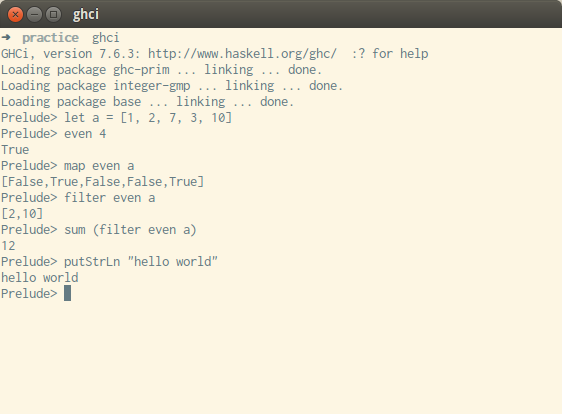

Made by Rohan Prinja / @wenderen
Haskell is a:
programming language with a great set of libraries and a very interesting approach to writing programs
When writing programs in a functional language, you write your program as the result of combining a bunch of functions together.
// An example of an impure function in C++
void increaseAndPrint(int* number) {
*number++; // We're modifying the environment here!
std::cout << number << std::endl;
}
Pure means that the functions in the language do not have any side effects. If you run a function many times, it always gives the same result in Haskell!
Haskell programs are converted into machine code by the Haskell compiler, so you get all the benefits of a compiler!
Haskell has a strong type system that helps you catch silly mistakes
-- this is a type signature
factorial :: (Integral a) => a -> a
-- it means "if a is a type belonging to the Integer type class...
-- then factorial is a function that converts variables of type a...
-- to variables of type a"
factorial 0 = 1
factorial n = n * factorial (n - 1)
Haskell has lazy evaluation - it doesn't calculate the entire value of something if only part of it is needed by a program.
main = do
print (sum first100Even)
where first100Even = take 100 [2, 4 ..]
-- prints 10100
[2, 4 ..] is an infinite list, yet the program finishes in a finite amount of time!
The compiler figures out that we only need the first 100 elements, so it only grabs those elements.
-- Hello world
putStrLn "Hello world!"
-- Find the sum of even numbers in an array
sum (filter even [7, 4, 11, 9, 2, 6, 8])
-- Fibonacci numbers!
fib 0 = 0
fib 1 = 1
fib n = fib (n - 1) + fib (n - 2)
Print out all permutations of a string
import Data.List
put x 0 ls = x:ls
put x i [] = [x]
put x i (l:ls) = l:(put x (i-1) ls)
perms :: String -> [String]
perms "" = [""]
perms str@(x:xs) = nub $ concatMap (\ func -> (map func subPerms)) putFuncs
where subPerms = perms xs
putFuncs = map (put x) [0 .. (length str)-1]
main = do
print $ perms "abc"
To write a program in Haskell, just write the functions you want, then define a main function.
Haskell program files have a .hs extension.
-- myprogram.hs
main = do
putStrLn "Hello world!"
You have a couple of options here. Run directly, or compile and run!
runhaskell ./myprogram.hsghci myprogram.hs; ./myprogramAlthough Haskell is a compiled language, it also has an interpreter so you can mess around and test things without having to write an entire program
ghci is the Haskell interpreter. You can use it to run small snippets of Haskell code.
To use it, open up a terminal - you should have haskell-platform installed - and run the command ghci
Some useful interpreter commands
:t variableName - find the type of a variable:t functionName - find the type of a function:l filename - load the function definitions of a file into the interpreterAlso, let variableName = expression will assign the expression result to the variable
ghci is useful when you want to test stuff or just play around with Haskell
Function definition is pretty natural
f x y = x*x + y*y
You can use where to make code easier to read...
f x y = xSquared + ySquared
where xSquared = x * x
ySquared = y * y
...and you can also put function definitions inside where!
f x y = (square x) + (square y)
where square z = z * z
You can add a type signature - most of the time, you won't need to
-- "::" means "has the type"
f :: Int -> Int -> Int -> Int
f x y z = x*x + y*y + z*z
You call a function the same way you define it:
g x y = x*x + y*y + z*z
g 2 3 4 -- 30
You can also call a function with fewer arguments than it supports - this is called partial application
let f1 = g 2 -- f1 is now a two-argument function
f1 3 4 -- this is the same as (g 2) 3 4 i.e. g 2 3 4 i.e. 30
In Haskell, everything has a type
These two things together make up a function's type signature
Some built-in types in Haskell:
A typeclass is just a collection of methods. A type be an instance of many different typeclasses. When a type belongs to a typeclass, it must support every method in the typeclass.
For example, the Ord class consists of types that can be compared. So Int and Float are members of this typeclass
Here are some built-in typeclasses:
A type signature specifies the input / output types for a function
The last term is the output type, the rest are the input types
-- Input: a Float and a Char. Output: a list of Ints
Float -> Char -> [Int]
You can have type variables too!
-- Input: a parameter of type a (a can be anything), and a list of a's
-- Output: True or False
a -> [a] -> Bool
-- Can you think of a function which might have this type signature?
You can also specify typeclasses in a type signature!
-- Input: a parameter of type a (a is a comparable type).
-- Output: a list in which each element has type a
(Ord a) => [a] -> [a]
-- Can you think of a function which might have this type signature?
No surprises here!
-- Arithmetic
1 + 2 -- 3
2 * 3 -- 6
18 / 5 -- 3.6
3 ^ 4 -- 81. ^ only works for integers
3 ** 4 -- 81
3 ** 0.5 -- 1.7320508075688772
4 ^ 58 -- 83076749736557242056487941267521536
-- Comparisons
4 /= 5 -- True
4 == 5 -- False
"abc" < "def" -- True
-- Logic
True || False -- True
True && False -- False
In Haskell, a list is a sequence of items of the same type.
-- A list of Floats
[1.2, 4.3, 9.0, -3.7, 2.5]
-- In Haskell, a string is really a list of chars
-- These two are the same
"a string"
['a', ' ', 's', 't', 'r', 'i', 'n', 'g']
-- Lists can be specified by ranges, too
-- These two are the same
[1, 3 .. 13]
[1, 3, 5, 7, 9, 11, 13]
-- Ranges don't have to contain only integers!
[0.1, 0.3 ..]
-- But try to avoid using floating point ranges :)
[0.1, 0.3, 0.5, 0.7, 0.8999999999999999, 1.0999999999999999]
-- Infinite lists!
[1, 5 ..]
length [1, 2, 6, 8] -- 4
head [1, 2, 6, 8] -- 1
tail [1, 2, 6, 8] -- [2, 6, 8]
init [1, 2, 6, 8] -- [1, 2, 6]
last [1, 2, 6, 8] -- 8
take 3 [1, 2, 6, 8] -- [1, 2, 6]
drop 3 [1, 2, 6, 8] -- [8]
sum [1, 2, 6, 8] -- 17
product [1, 2, 6, 8] -- 96
4 : [1, 2, 6, 8] -- [4, 1, 2, 6, 8]
[1, 2] ++ [6, 8] -- [1, 2, 6, 8]
[1, 2, 6, 8] !! 0 -- 1
[1, 2, 6, 8] !! 2 -- 6
There are many others, check out the references for more
A list comprehension takes a list and returns another list from it.
-- A simple list comprehension
[ (3*x) + 4 | x <- [4, 5, 2, 3] ] -- [16, 19, 10, 13]
-- Taking elements from multiple lists!
[ x*y | x <- [1, 2, 3], y <- [7, 8] ] -- [7, 8, 14, 16, 21, 24]
Whe taking elements from a list, you can also specify the conditions under which they are chosen!
-- 'odd' and 'even' are two boolean functions
odd 5 -- True
even 5 -- False
[ x | x <- [10 .. 20] , odd x] -- [11, 13, 15, 17, 19]
-- Each one of the conditions must be satisfied simultaneously
[ x | x <- [10 .. 20] , odd x, even x] -- []
Tuples have a fixed length, and each length determines a different type
[(1 , 2) , (8 , 11 , 5) , (4 , 5)]
-- error: the second element has a different type from the other two!
Tuples don't have to contain homogenous data - unlike lists
(1, True, "abc", 'x', -4.3)
And of course, tuples can contain other tuples
((1, 2), 3, False)
In Haskell, functions dealing with lists are often defined recursively.
We specify the base case first, then the general case. The general case usually follows a pattern:
Let's write a function to find the length of a list
-- Base case
length1 [] = 0
-- General case
length1 (x:xs) = 1 + length1 xs
This is an example of pattern matching! The list [1,2,3] will be matched as follows:
[1, 2, 3] == 1 : [2, 3] -- two ways to express the same list
1 <=> x -- the head of the list is matched to x
[2, 3] <=> xs -- the tail of the list is matched to xs
Let's write a function to find the sum of elements in a list
-- Base case
sum1 [] = 0
The base case is easy. What about the general case?
-- General case
sum1 (x:xs) = x + sum1 xs
Let's write a function that takes a function f and a list and returns a new list by applying the function f to every element in the old list
-- Base case
map1 f [] = []
The base case is an empty list, since there is nothing to map over. What about the general case?
-- General case
map1 f (x:xs) = (f x) : (map1 f xs)
This example shows us that Haskell can pass functions as parameters too!
As you saw in the last example, Haskell treats functions as first-class objects.
You can pass functions as arguments...
map even [2, 4, 9, 0, 3, 5] -- [True, True, False, True, False, False]
You can have functions without a name (useful for having temporary functions)
filter (\ x -> x > 3) [2, 4, 9, 0, 3, 5] -- [4, 9, 5]
Such functions are called lambda functions
Haskell lets you compose functions by using the . operator
sqr :: Num a => a -> a
sqr x = x * x
squareThenAddOne = (+1) . sqr
squareThenAddOne 2 -- 5
Remember the permutation program? Let's try to understand it now
import Data.List
put x 0 ls = x:ls
put x i [] = [x]
put x i (l:ls) = l:(put x (i-1) ls)
perms :: String -> [String]
perms "" = [""]
perms str@(x:xs) = nub $ concatMap (\ func -> (map func subPerms)) putFuncs
where subPerms = perms xs
putFuncs = map (put x) [0 .. (length str)-1]
Let's go over the program bit by bit
import Data.List
We're importing a library that we will need later on. This library contains some additional useful functions that operate on lists - such as nub
put x 0 ls = x:ls
put x i [] = [x]
put x i (l:ls) = l:(put x (i-1) ls)
This function simply takes an element, a position, and a list. It returns a new list obtained by inserting the element at that position into the list.
perms :: String -> [String]
This is the type signature of our main permutation function. It takes a String and returns a list of Strings
Note that we didn't specify the type signature for the put function. That's okay. Most of the time the compiler does that for us.
perms "" = [""]
Base case. Easy stuff. If a string has zero length, then it has only one permutation, namely, itself
perms str@(x:xs) = nub $ concatMap (\ func -> (map func subPerms)) putFuncs
where subPerms = perms xs
putFuncs = map (put x) [0 .. (length str)-1]
This is the interesting part :)
The @ is a pattern-matching capture. It says "if the argument to perms has head x and tail xs, call the entire thing str"
The nub function takes a list and removes all duplicate elements from it.
nub [1, 1, 3, 5, 6, 1, 3, 5, 2] -- [1, 3, 5, 6, 2]
perms str@(x:xs) = nub $ concatMap (\ func -> (map func subPerms)) putFuncs
where subPerms = perms xs
putFuncs = map (put x) [0 .. (length str)-1]
concatMap is just like map, except that it expects to get a list of lists, which it then concatenates into one lists
where subPerms = perms xs
This is a recursive call - we are just finding all permutations of the string minus the first character
putFuncs = map (put x) [0 .. (length str)-1]
This is the really cool part - we are creating a list of partial functions! The ith element of the list is the partial function put x i! This is a function which takes a list and inserts x at the ith position in that list.
perms str@(x:xs) = nub $ concatMap (\ func -> (map func subPerms)) putFuncs
Now it makes sense - we're taking each one of the partial put functions and mapping each one over the result of the recursive call - which is just a list of strings.
For each put function, we get a list of strings. So for all put functions, we get a list of list of strings, and...
concatMap (\ func -> (map func subPerms)) putFuncs
...will concatenate that list of list of strings into just a list of strings...
...and calling nub will remove all duplicates!
Looks complicated? Not really. Give it some time!
perms str@(x:xs) = nub $ concatMap (\ func -> (map func subPerms)) putFuncs
where subPerms = perms xs
putFuncs = map (put x) [0 .. (length str)-1]
Example run of our program:
perms "abc"
--["abc", "acb", "bac", "cab", "bca", "cba"]
The Haskell standard library has plenty of nice modules. To use a module, you need to import it.
We've already seen an example of this.
import Data.List
You can rename types to other types
type PersonsAge = Int
let a = 5 :: PersonsAge
This is just a cosmetic thing, however. It doesn't actually create a new type. Thus, this code compiles and runs...
type PersonsAge = Int
isLessThanSix :: Int -> Bool
isLessThanSix x = x < (6 :: Int)
main = do
let a = 5 :: PersonsAge in print (isLessThanSix a)
So what if you want to rename a type and treat it as a new one?
Answer: newtype!
newtype PersonsAge2 = PersonsAge2 Int
isLessThanSix :: Int -> Bool
isLessThanSix x = x < (6 :: Int)
main = do
let b = 5 :: PersonsAge2 in print (isLessThanSix a)
If we try to compile this, we get an error.
To define our own types, we can use the data keyword
data Complex Int = Complex { re :: Int, im :: Int }
-- 're' and 'im' are the fields of the Complex data type
But this can handle only Ints. This is more general:
data Complex a = Complex { re :: a, im :: a }
The problem with this is, a can be anything. Including non-numbers.
Complex 'a' 'b' -- We don't want this!
We want to prevent this. The solution is to hide the constructor behind another one. Like so:
complex :: (Num a) => a -> a -> Complex a
complex r i = Complex r i
If you want a custom data type to be part of a typeclass, use the deriving keyword.
This may not always work, because some typeclasses - like Num cannot be derived from.
Let's say we want to make complex numbers part of the Show typeclass so that they can be printed
data Complex a = Complex { real :: a, img :: a } deriving Show
Now we can print complex numbers. Haskell automatically defined the printing for us!
print $ Complex 1 2
-- Complex {real = 1, img = 2}
But what if we want control over the way Complex numbers are printed? Then we must manually derive from the Show typeclass
For that, we need to implement all functions in the Show typeclass. There is only one such function - show
instance (Show a) => Show (Complex a) where
show (Complex re im) = "re: " ++ show re ++ " im: " ++ show im
Until now, we were using the standard typeclasses. Let's reimplement one of the standard typeclasses ourselves to see how things really work.
class Eq a where
isEqualTo :: a -> a -> Bool
isNotEqualTo :: a -> a -> Bool
As you can see, to define a typeclass, we need to list out the functions it supports, along with their type signatures
Don't confuse the class keyword with that of other languages! class should be read as typeclass. It has nothing to do with the classes of Java and C++.
Remember, Haskell is a pure language. That means it tries to avoid modifications to the "world". This gives Haskell, a lot of advantages, as discussed earlier
But sometimes, modifications can't be avoided. For example, we might want to take input from a user.
main :: IO ()
main = do
putStrLn "Please enter numbers separated by commas"
input <- getLine
print $ sum $ toList input
In the above code, main is an impure function. It is modifying the world.
do keywordThe key to understanding the above main function is the do keyword.
Inside the do block, every expression has the return type IO a
-- it takes a String and returns an empty IO action
putStrLn :: String -> IO ()
-- it takes no input and returns an IO String
getLine :: IO String
-- it takes a showable type 'a' and returns an empty IO action
print :: (Show a) => a -> IO ()
Inside a do block, if we have a statement
x <- something
then if
something :: IO a
then
x :: a
Furthermore, these are the only kinds of statements we can encounter inside a do block.
action1 :: IO a -- generally, a is ()
and
value <- action2 -- where action2 :: IO b
-- and value :: b
IO is a monad. A monad is a structure that represents computations defined as a sequence of steps
Think back to our earlier example. We took input from the user, parsed it into a list and printed the sum of the list. This was a sequence of steps. We used the IO monad to sequence these steps.
A monad is three things: a type constructor and two operations called bind and return
bind takes values and puts them in a monadic container
return takes values out of a monadic container
In the earlier example, monads encapsulated side effects while changing the world
But monads can also be used for all other sorts of things - like error handling as well. References:
Still enthu for more Haskell?